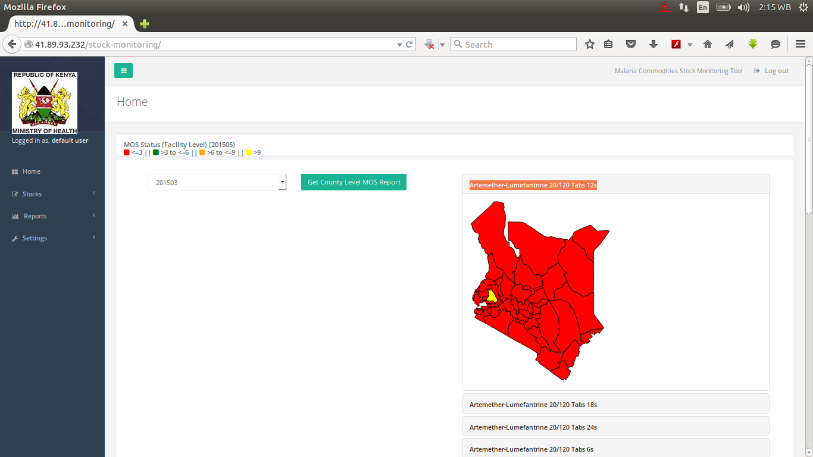
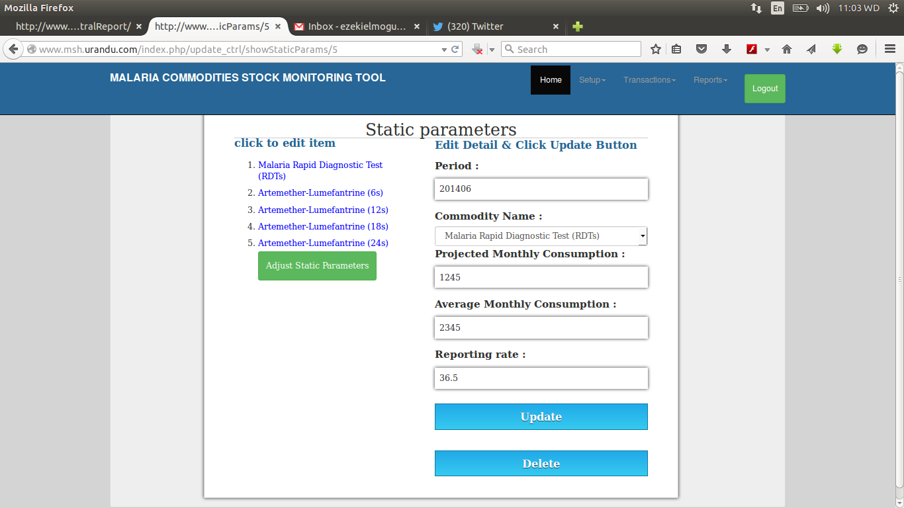
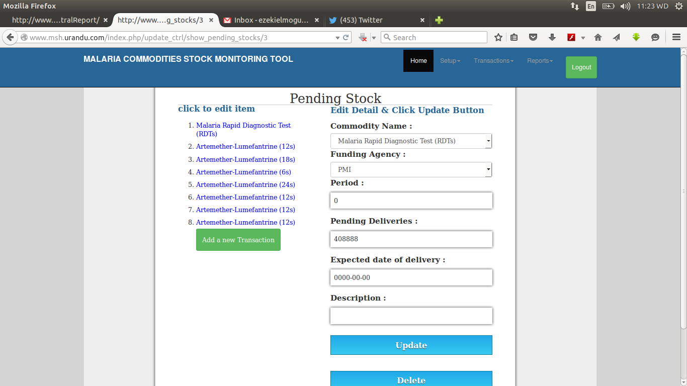
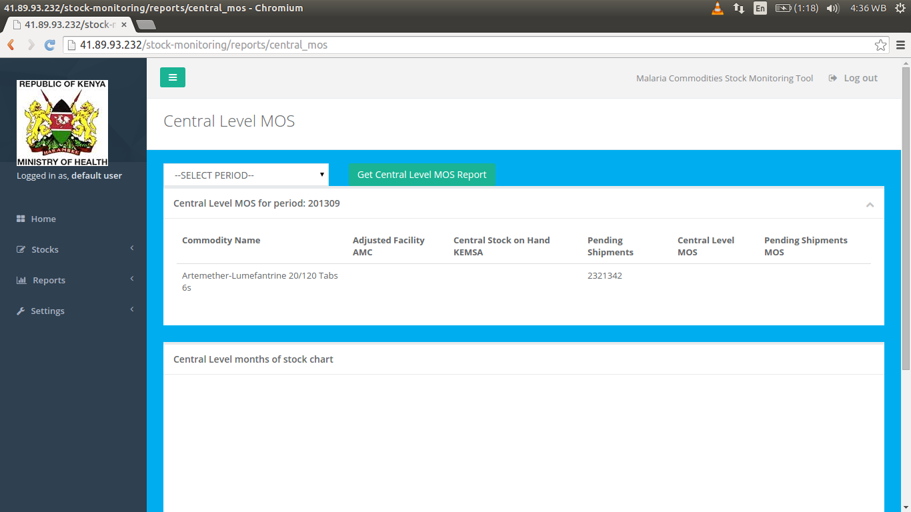
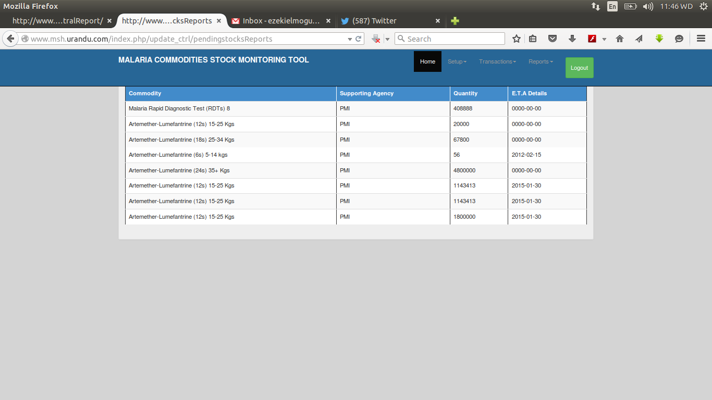

User guide¶
Introduction¶
MSH/HCSM is a key member of the Malaria drug management subcommittee, which is involved in the stockstatus monitoring of Malaria commodities both at the National and County levels.
On a monthly basis, the Malaria Control Unit, drug management committee meets to review the stock status ofmalaria commodities in the country, by analyzing data from various sources including:
- Facility and County Level Stock Data from DHIS.
- National Level Stock Status data from the Supply Chain Agencies (KEMSA).
- Pipeline information based on incoming shipments per funding agency.
This data is aggregated and analyzed for the different malaria commodities and a 2 pager report generated that indicates to management, the months stock status and pipeline monitoring of Malaria commodities. Currently MCU uses an excel based tool to generate this information. The current requirement is to amend and enhance the current 2 pager tool to accommodate additional requirements including representation of Central and county level data for Malaria commodities, and to color code the different pending shipments based on the timelines for delivery. This request makes the current tool being used to develop the 2 pager report redundant as it will not meet the requirements of the Malaria control unit and the donor, hence the need to develop a new tool.
Getting started¶
Purpose of this project is to create a stock status management tool that analyzes data from various sources including:
- Facility and County Level Stock Data from DHIS.
- National Level Stock Status data from the Supply Chain Agencies (KEMSA).
- Pipeline information based on incoming shipments per funding agency.
System requirements¶
Chrome/Chromium browser is recommended for the application. This is because of the javascript used in the application wil be able to load faster.
Login roles to the stock status management tool are also required inorder to access the application and its functionality.
Authentication is the process by which clients send login credentials over the HTTP to a web server. The request is associated with a specific user, while authorization determines if the user has permission to perform the requested operation.
Session Authentication¶
Logging in¶
- You have to loggin to the Stock management tool to access most of its functionality.
- The payload should be similar to the example below:
{
"username": "username",
"password": "password"
}
Note
A successiful login will lead you to using the application.
Here is the login page:

After successiful login, the homepage is loaded.

Logging out¶
You can logout after using the tool by clicking the logout button in the menu bar.
A successful logout will bring up a success message similar to the one below:
{
"success": "Successfully logged out."
}
User tasks¶
Setup¶
Funding Agency¶
This loads the panel for managing the funding agencies. The user clicks a funding agency from the list given for editing or deleting.

- After choosing one of the agencies, a user can edit or delete it.

A user can also add a funding by clicking the button of adding an agency.

Supply chain agencies¶
This loads the panel for managing the supply chain agencies. The user clicks a supply chain agency from the list given for editing or deleting.

- After choosing one of the supply chain agencies, a user can edit or delete it.

A user can also add a supply chain agency by clicking the button of adding a supply chain agency.

Commodities¶
This loads the panel for managing the individual commodities. The user clicks a commodity from the list given for editing or deleting.

- After choosing one of the commodities, a user can edit or delete it.

A user can also add a commodity by clicking the button of adding a commodity.

Counties¶
This loads the panel for viewing and updating counties. The user clicks a specific county from the list given for updating details about it.

- After choosing one of the counties, a user can edit the zone and/or the comment about it.

Static parameters¶
This loads the panel for managing the static parameters. The user clicks an item from the list given for editing or deleting.

- After choosing one of the static parameters, a user can edit or delete it.
- 
A user can also add a static parameter by clicking the button of adding a static parameter.

Transactions¶
Pending shipments¶
This loads the panel for managing the pending shipments. The user clicks an item from the pending stock list given for editing or deleting.

- After choosing one of the pending stock, a user can edit or delete it.
- 
A user can also add a new transaction by clicking the button of adding a new transaction.

Confirmed shipments¶
Current Stock¶
This loads the panel for managing the current stock. The user clicks an item from the current stock list given for editing or deleting.

- After choosing one of the current stock commodities, a user can edit or delete it.

A user can also add a new record by clicking the button of adding a new record.

Reports¶
Central level MOS Report(Forecast)¶
A report on central level MOS using forecast data. It reports on the following:
- Commodity name
- Aggregated Adjusted Consumption Totals
- Aggregated Stock on Hand Totals
- Central level MOS

Central level MOS Report(DHIS2)¶
It shows a report on the central level MOS from DHIS2. It reports on the following:
- Commodity name
- Aggregated Adjusted Consumption Totals
- Aggregated Stock on Hand Totals
- Central level MOS

County level MOS Report(DHIS2)¶
It generates a report on the county level MOS. It reports on:
- Commodity name
- Aggregated Adjusted Consumption Totals
- Aggregated Stock on Hand Totals
- County level MOS

Current/Pending¶
It shows a report on the current/pending commodities. It reports on the following:
- Stock on Hand(SOH)
- Total Pending consignments
- MOS
- Commodity
- Individual Agencies & Quantity

Total pending commodities¶
This shows a report on the total pending . It shows the following details:
- Commodity
- Totals

Individual pending commodities¶
This shows a report on the individual pending stock. It shows the following details:
- Commodity
- Supporting agency
- Quantity
- E.T.A Details

Commodities/Agency¶
This shows a report on the number of commodities per a given agency.

Note
A future version of this server may add support for social authentication e.g login via Facebook, Twitter or Google accounts.